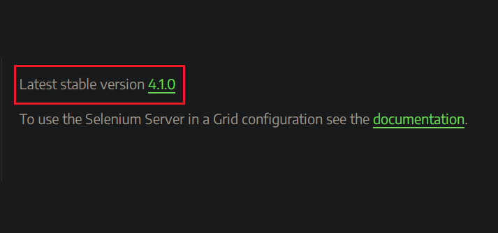
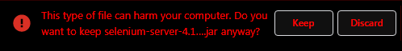

Начало
Тестване
Отдел
Контакти
Автоматизация
Упражнения
Selenium WebDriver
Изтегли Selenium WebDriver тук
I. След отваряне на линка, намери секция "Downloads".
В интерфейса намери "Latest stable version <номер>.", тук номерът на последната стабилна
версия ще се променя, но е важно да се изтегли именно последната стабилна версия.

II. След изтегляне на файла долу вляво на екрана ще бъде показано съобщението
"This type ot file can harm your computer. Do you want to keep selenium-server-<номер>.jar anyway?".
Натисни бутон "Keep" и съхрани файла.

III. Добра практика е всичко свързано с автоматизираните тестове (драйвъри и допълнителни библиотеки)
да бъде инсталирано в една папка, с цел бърз достъп.